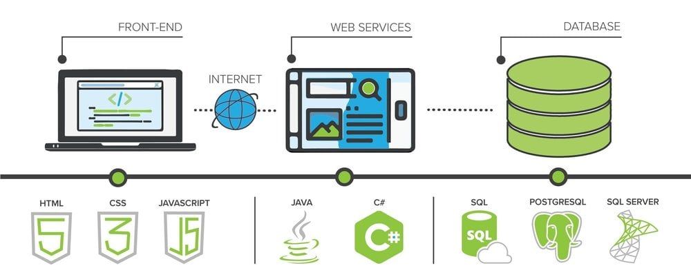

¿Qué significa un Full-Stack Developer?
Un desarrollador full stack es un profesional de la programación que domina tanto el desarrollo visual de una aplicación (frontend) como la lógica interna y las bases de datos (backend). Full-Stack es también vulgarmente conocido a los desarrolladores todoterreno, es decir, profesionales técnicos que son capaces de poder interactuar en cualquiera de las partes de una aplicación web.
Y si, decimos de una aplicación web porque esta terminología de Programador Full-Stack, sobre todo se aplica a entornos de desarrollo de proyectos en los que la web está implicada de una manera u otra. Mucha gente cree que un Full-Stack, debe saber de todo, programación web, programación de escritorio, desarrollo de aplicaciones móviles… y no es así.
Estructura de una aplicación web
Antes de comentarte los conocimientos que debe tener un programador Full-Stack, voy a explicarte por encima cómo funciona una aplicación web.
Te voy a poner como ejemplo la web que usamos todos para ver a nuestros creadores de contenidos favoritos, Youtube. Esta, como cualquier aplicación web y hablando a muy alto nivel, está compuestos por los siguientes apartados:
Backend
La primera de las partes será una aplicación web de parte del servidor. Esta será la encargada de controlar los videos que están subidos, los aloja, organiza y los pone disponibles para que los usuarios puedan verlos. Esta aplicación web de parte del servidor, también será la responsable de los registros de nuevos usuarios, de guardar nuestras suscripciones, nuestros me gustas etc… Y que toda nuestra actividad en la plataforma, quede registrada bajo nuestro usuario, para que cuando volvamos a entrar, pueda recomendarnos los videos que más se ajusten a nuestras preferencias.
De hecho, si estás viendo este post, seguro es porque estás interesado en mejorar tus habilidades como programador, o quieres empezar en el mundo del desarrollo y te estás documentando al respecto por lo que Youtube te ofrecerá videos relacionados con este tema.
Base de Datos
La segunda parte será un servidor de base de datos. Una base de datos no es más que un sistema de almacenamiento, normalmente relacional, donde están todos los datos de Youtube organizados para que el lenguaje del Backend, pueda realizar consultas y crear nuevos registros. El servidor de base de datos se asegurará de la consistencia de los datos y de que estén disponibles cada vez que se pidan. ¿Alguna vez os habéis preguntado lo que ocupará la base de datos de Youtube? De locos.
Frontend
Una vez tenemos una aplicación realizada con un lenguaje de programación de parte del servidor y un motor de base de datos para poder almacenar la información de forma persistente, lo único que necesitamos es proveer a nuestros usuarios de una interfaz con la que puedan interactuar con la aplicación web. Esta interfaz es la que mostrará “el cómo se muestran las cosas”.
A todo esto es lo que denominamos el Frontend de nuestra aplicación web. Ahora mismo cuando ves un video puedes hacerlo desde tu navegador web favorito, accediendo a Youtube y visualizando la interfaz de usuario que han programado para que puedas interactuar con su sistema. Esa interfaz hace de intérprete entre el usuario final y la aplicación web de parte del servidor, de una manera tan transparente, que hace que al usuario final no tenga que preguntarse ni en qué lenguaje está hecha la aplicación web. De hecho es muy común, que una aplicación web de parte del servidor, sirva también para que las aplicaciones móviles usen l
Tecnologias Fullstack Developer
World Wide Web
ó WEB.